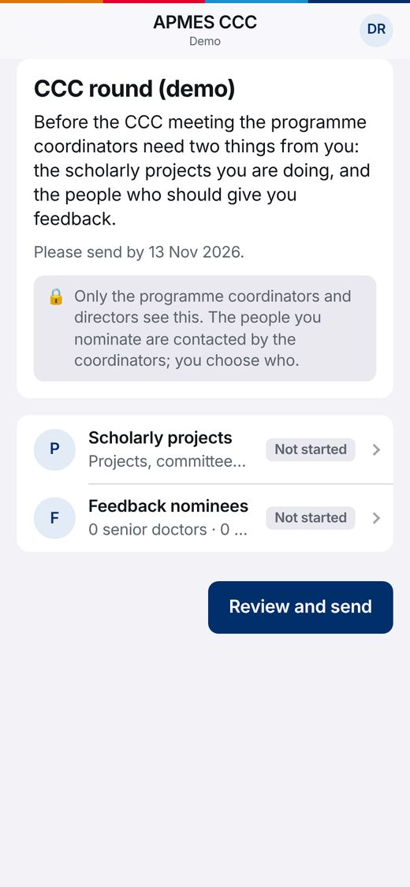
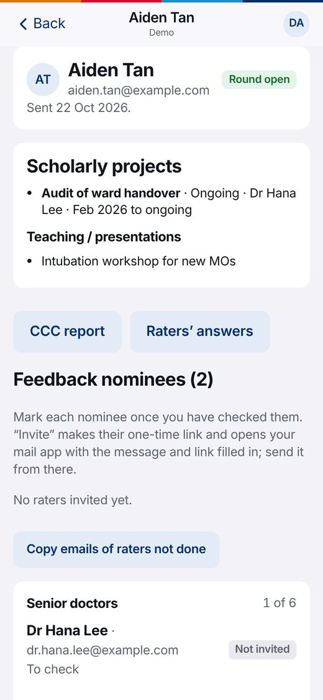
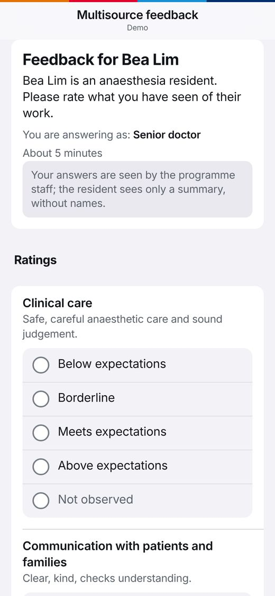
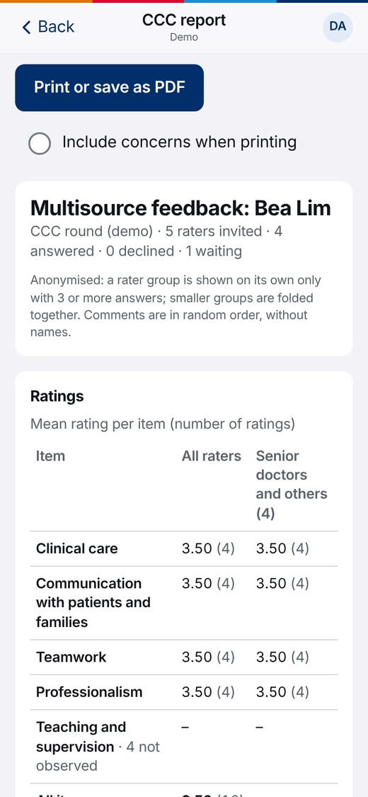

APMES CCC replaces the Google Form
Before each CCC meeting, residents used to fill in the Google Form “CCC Projects & MSF”, and the coordinators copied the answers out of the response sheet and emailed each nominee by hand. Now it all happens in one place.
This is a practice copy. Everyone in it is made up, and nothing you do here goes anywhere: it stays in this browser. Tap around freely; you can’t break anything.
There are four sides to it. Try them in this order and you will see one resident’s feedback go all the way through.
Residents
What residents see
Before: the Google Form, once per CCC, from scratch each time.
- Open the link and sign in with Google (the same sign-in as the logbook).
- Fill in scholarly projects. Last round’s projects are already there, so they only update them.
- Add committee work, teaching and conferences, one per line.
- Nominate up to 6 senior doctors, 2 peers, 4 allied health and 2 others. Names come up as they type.
- Tap Send. They can change it until the coordinators close the round.

Programme coordinators
What PCs see
Before: the response sheet, copying names into emails one by one, and a separate list of who has replied.
- Open a round (Coordinators’ view › Open a new round) and send residents the link.
- See at a glance who has sent and who hasn’t. Copy the emails of those who haven’t, to remind them.
- Open a resident and tick each nominee Checked, or Ask for a different person.
- Tap Invite beside a checked nominee: your email app opens with the message and their own link filled in. Just press send.
- Each nominee shows Not invited, Invited, Done or Declined. Tap Reminder for the ones not done.
- When the meeting is near, close the round. Download the lists as a spreadsheet (CSV) if you still want one.

Nominees (raters)
What a nominee sees
Before: an email from a coordinator, then the paper or MedHub MSF form.
- They open the link in the coordinator’s email. No account, no password.
- They see who they are giving feedback on, and in what role (for example, as a senior doctor).
- About five minutes of questions: tap a rating, add a comment or two.
- Tap Submit, or Decline if they didn’t work with the resident. The link then stops working.
In the demo, this link is from Dr Ivan Chua, asked about Bea Lim.

Programme directors and the CCC
What the CCC sees
Before: someone collated the forms into a summary by hand.
- A CCC report per resident: their projects and lists, how many were asked and answered, and the average rating per question by group.
- Raters stay anonymous: a group appears only with 3 or more answers, otherwise it is folded into “Others”. Comments show without names.
- A round overview of all residents, and a print button for a clean PDF for the meeting.
- Only PDs and PCs can open the raters’ actual answers. Residents never see them.
In the demo, four made-up raters have already answered for Bea Lim. Answer as the nominee above and yours is counted too.

Where each part of the old form went
| Google Form | APMES CCC |
|---|---|
| CCC Meeting | The round the coordinators open (for example “CCC Jul–Dec 2026”) |
| Full name, email | Taken from the Google sign-in |
| Scholarly Project / Supervisor / Progress | Projects, one card each, kept for next round |
| Committee / Admin Work, Teaching / Presentations, Conference presentations | The three lists, one item per line |
| Medical Staff (Senior) 1–6, (Peer) 1–2 | Nominees: senior doctors and peers, picked from the staff lists |
| Allied Health 1–4: name and email | Nominees: allied health (email needed) |
| The response sheet | Coordinators’ view, with a spreadsheet download |
Past responses from the Google Form are in the app as earlier rounds.
Made a mess? Start the demo again with the made-up people as they were.